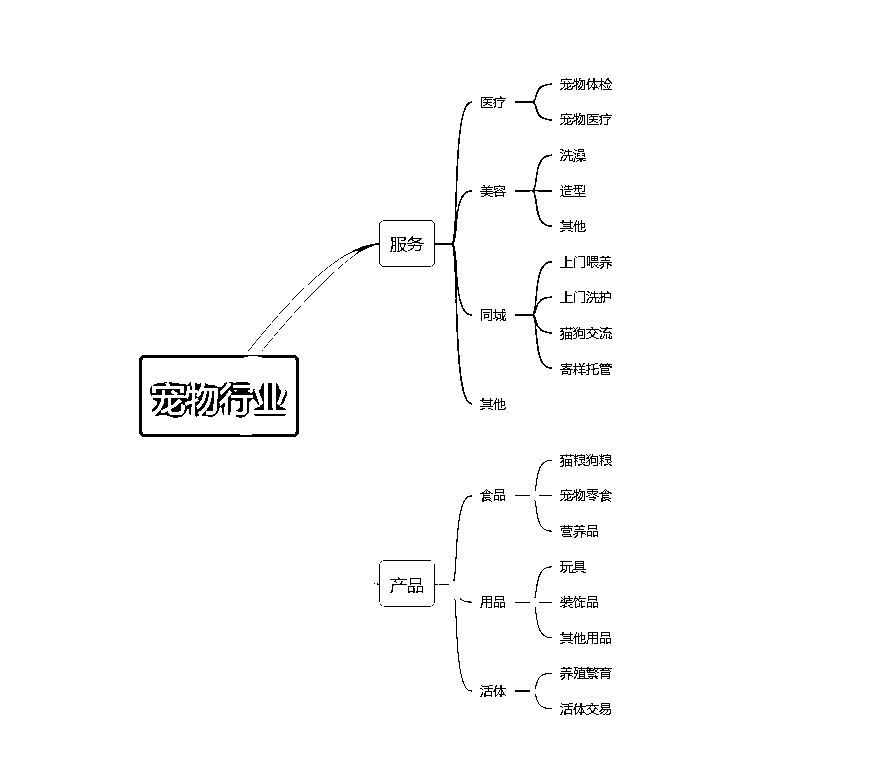
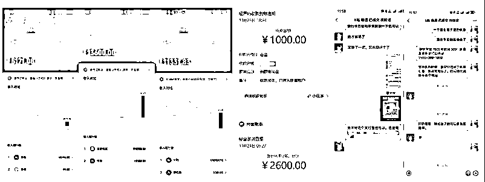
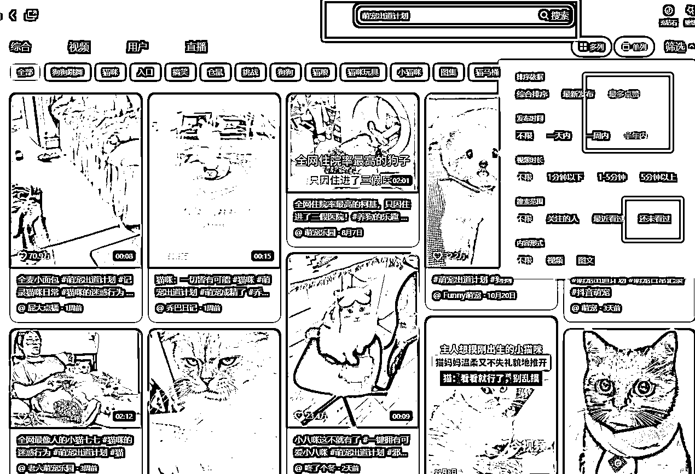
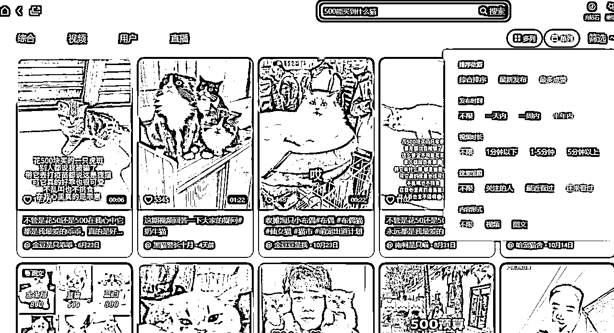
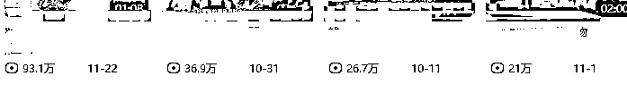
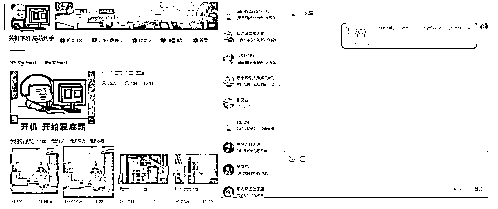
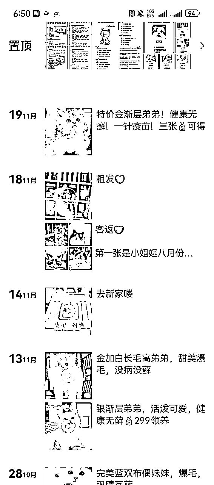
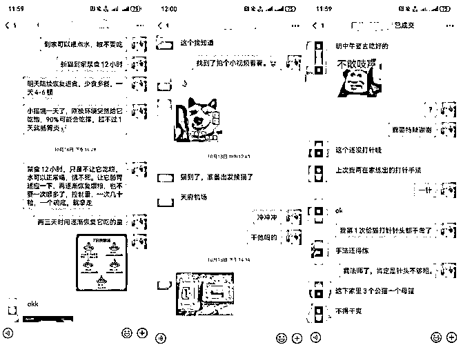
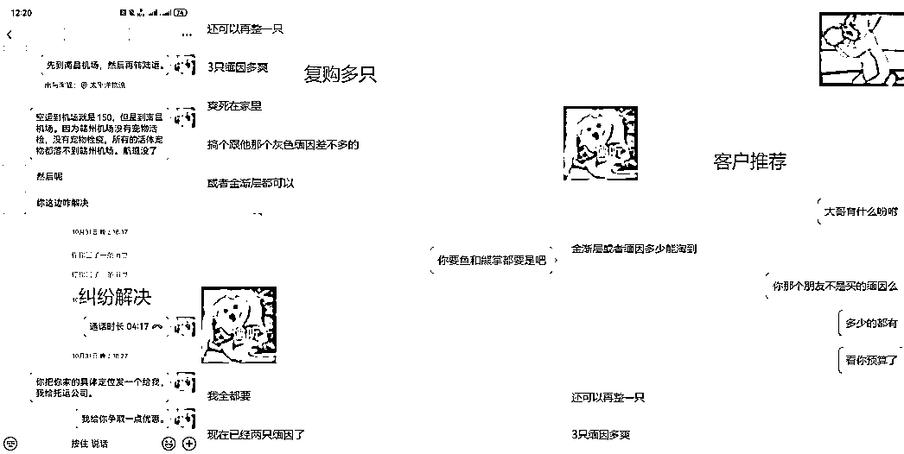

来源：https://tv5c6neillx.feishu.cn/docx/GJ3Bd10p1oKfHtxhg2Lc0aWAnAe
各位圈友大家好，我是王兴平，自己创业8年了，加入星球已经2年了，一直都是做后端没有怎么分享，今天给大家分享一下，如何普通人新手小白一个月的时间，一部手机，不投流，纯搬运，如何实现宠物赛道从0-1。
我自己做公关公司转型过来的，期间做过养生带货,团队人员40+，后来团队转型做国学+旅游民宿，同样也是主打买粉后端转化，基本盘稳定后和圈友付费学习后接触到了宠物赛道。
我本人做项目一直都是进入一个赛道就开始深挖，没怎么换项目，宠物赛道我是当成公司未来的一个主营业务去做的，涵盖了很多方方面面。
有人说内卷，那是当然，不内卷就没有挑战了，年轻人无惧挑战。
话不多说，下面开始。
最重要的原因就是宠物赛道绿色健康，引流基本不违规 ，行业涵盖的面也比较广，适合长时间干，有积累且利润高，符合长期作战的条件。在经历过一段时间的调研后，走访了同城宠物市场做了调研，查阅了公开数据，采访了做宠物行业的圈友，与朋友交流（一家北京的做宠物融了B轮的公司）后决定入局宠物赛道。
在当下的社会，年轻人晚婚晚育的越来越多，单身的和不单身的都需要陪伴，需要精神寄托。那么到了节假日，不管是年轻人还是家庭出行旅游需求都是比较大的，那时候家里的宠物就需要人照顾了。由此也可以延伸出很多分支赛道。
各种赛道的公开数据到处都是，在这里就不一一列举了。给大家展示一个宠物行业的分支图。

我选择的是线上无货源形式销售活体，成本比较低，基本上是0投入，一个手机就可以开干。15-30天就拿到了结果，
刚开始接触项目的时候，也是做的混剪方式，后面发现这样的方式起量比较慢，尝试过找兼职剪辑，但是水平都是参差不齐，由于混剪的方式比较费时费力，我选择了搬运的方式方便快捷方便起量，可以更快的放大。
流程就是通过各大短视频平台引流私域，等客户选好活体之后交定金联系发货，发货前结清尾款，这样的模式大大降低了资金风险成本。
之后再通过线上结合线下，延伸到同城上门服务+猫狗乐园的形式来拓展业务，相同的用户群体积累下来后还可以举办同城聚会，相亲团建等活动。
（现在这部分业务已经筹备起来了，开始产生收益了）
活体的单个单价基本都是上千，利润看和客户聊实际情况，基本可以达到三分之一到三分之二之间，积累的经验多了可以达到对半甚至更高。
我用了一个月的时间来测试项目，到今天为止单号变现1.5w+，还在持续增长中，目前同时运营了三个号，马上结合线下矩阵进行放大。

以上是部分的账号数据，有一部分是使用银行卡收款，没有展示出来。
其实在我看来做任何项目都是两步走：引流+转化，简单的来说就是把客户从各大平台上找到，然后再添加到微信私域里面去成交，在从这两块去细分就行了。
前期硬件准备一台工作机或者多台，办理一张电话卡，有老的最好，养号一般2-3天就够了，如果手机号是新号，记得也要养一下，不能拿到新手机号就开始注册各个平台，之前也踩过坑，正好赶上本地属于电诈风险区域，手机号封了7天什么都做不了，太浪费时间。
准备好之后注册各大平台的账号，比如红薯，抖音 视频号 微信 B站等 并修改昵称背景图，主页留好引流联系方式。
接下来就是开始引流，其他平台圈友们都说的很多了，我这边B站走的比较稳，我就以B站为例。
其实萌宠号自带流量，只要前期号养好了，其实一般第一条作品就会有500的基础播放。
因为抖音用户比较多比较杂，红薯的女性确实比较多，但是成交不太爽快，经过我实际测试之后选择了主打B站。
作品分为两种，流量视频和转化视频
起号的流量视频：以萌宠视频，甜美的，搞笑的，可爱的，萌化内心的这类为主。
引流转化的视频：以宠物市场买宠物砍价的和挑选宠物的为主。
实操过程中如果起号的流量视频播放量稳定在300-500左右就可以发布引流添加客户的视频了。
剪辑方面我主打的就是搬运，不剪辑，节省时间成本，从不同的平台交叉搬运，防止被查重，抖音搬到小红书，小红书搬到抖音，只要搬运够快，查重就追不上我。（有一次很搞笑，比原博主还同步的快，我设置了抖音热点检测，原博主还在小红书找我骂我，他发出去被查重了，举报我抄袭）

搜索话题：#萌宠出道计划，#记录猫咪日常，#猫咪迷惑行为等类似话题出现的视频都是可以使用的素材，只要我们自己觉得好看就可以纳入我们的素材库， 素材首先要过得了自己的审美，自己都不喜欢，那就算了，自己看了可以，再去别的平台搜索，没有相同的在去水印下载下来搬运过去。
小技巧：每次要找新的素材的时候都要选择“自己还未看过”的这个筛选条件，不然重复搬运浪费自己的时间。

素材选择标准可以参考流量视频
小技巧：筛选条件要选半年内的，因为总有好视频别人没搬运到的，时间长了搬运差不多了就选近期的
每天更新3-5个早中晚卡在吃饭之前一小时左右发布就行了。持续输出一周左右就会开始有人咨询了，前提是按照养号的方法预留咨询方式。
（这里是指的正常作品不爆的情况下，如果作品爆了，第二天就上人准备添加微信成交了）
当账号流量起来之后通常会出现以下几种情况：
1.用户会私信你，问你猫咪怎么卖，多少钱？我们只需要回复联系方式添加就行了。
2.评论区咨询，这个需要我们时刻关注账号，及时私聊回复。
3.作品评论置顶（有喜欢同款小可爱的可以看我主页联系我）
做完这些就在微信等待客户添加，然后进入下一步聊天成交。
给大家展示一下我自己账号的一些实操截图：


按照这个方法基本上爆率很高，私信回不完的情况下设置自动回复等待用户添加就好了
注：可以主动也可以被动，但是实测过等待用户添加这样账号要活的长久一些，不然很容易违规死号
把人添加到微信之前要做好以下准备：
建议引流号和私域微信号名字一定要对应，而且尽量是个人名，不是品牌或公司名。逻辑很简单，没有人愿意跟一个客服成为朋友，也没有人愿意跟一个官方号多聊自己的喜好。
在开始引流进人之前一个星期开始发布朋友圈，每天发十多条，这样新进人之后就不会发现你是新号。
聊天过程中多使用表情包，收藏一点萌宠的表情包可以有很好的效果，偶尔发点语音条，这样信任感就会慢慢拉进。
纯广告圈一定会被删好友，所以一定产品圈+客户反馈圈+买家秀+个人生活/价值观+养宠干货，产品圈40%，其他部分60%，分享的内容可以去小红书搬运。
为了方便用户浏览，可以用括号设置几个专区例如：【每日特价】【猫猫反馈】【新猫到家】【养宠小知识】等等，每天不要太多。适可而止。有人咨询就单独给他找。

这部分是比较重要的，引流都是为了添加私域，加进来的每一个人都要重视好，我个人总结了以下几点：
1.新客到访接待
接待回访要及时设置欢迎语，打好标签，比如什么平台来的，预算多少之类的，想要什么类型的。
超过晚上12.00以后的看到之后也第二天同意，这样会获得一次添加好友成功的提示，不然半夜发了消息别人不知道，错过机会。
2.聊天过程
聊天过程中灵活应对，不太生硬，要有自己的节奏，不要被客户带偏了，不要一问一答QA形式的，把客户带入自己的节奏中，遇到解决不了的问题不要硬钢，有时候一两个表情包就解决的问题，偶尔适当的发语音条打电话，这样可以增加信任感，打语音电话可以避免客诉后截图去闹事，没记录。
3.成交之后
记得按时回访，收集反馈视频，一方面可以搜集素材发朋友圈，另一方面可以让客户感觉被重视，而不是一锤子买卖，也可以促进很多复购。

因为宠物是活体，猫粮那些倒是可以找多多代发，但是这个怎么弄呢，下面就给大家说说。
全国最大的宠物交易市场就是东北，尤其是沈阳，不仅养户多，一手代理多，而且配套服务非常全面，宠物托运、宠物交易市场、宠物用品等一应俱全。
想全身心的做也可以直接过去线下面谈，如果不想去也可以咸鱼，小红书，抖音里面搜一下卖猫的由用户发啊视频，看他们主页介绍，添加联系方式从他们那边进货，但是要注意甄别骗子，和批发商打好关系，经常会给你释放很多干货，有好货也会先给你的。
要提前咨询好售后的问题，不然到时候出现售后问题了，找他们的时候口径不一致很麻烦，会把自己做亏本。
最后付款的临门一脚弹出了风险提示，很多客户就流失了，这时候可以发语音条给客户说，或者转为支付宝，最好的方式就是把之前成交的录屏给别人看，证明以下，没有成交就自己造一个。如果要求走闲鱼就不做了，因为闲鱼是付款周期有点长，后打钱， 要垫款，到时候到手砍价，得不偿失。
宠物活体一定会遇到售后问题，比如：猫瘟、死亡、腹水。我们从一手货源拿货的宠物一般售后最多3天，因为价格相对比市场或线下足够有优势。
我们的售后都是明确放在主页背景图的，在售后期内出现问题，要么补发，要么退1/3 ，只要提前说好，客户一般都不会胡搅蛮缠。
实在是出现大问题了，让客户提供全程的录像，然后去找卖家一般都会OK的。
一定要好好的做好售后，转介绍成交率非常之高，比如下面这个转介绍的已经三只了还要一只。出现纠纷之后最好打语音电话解决问题，以免截图网暴影响账号。

要做长期当成一个主营业务去做还是要做好规划
我这边目前的是线上为主线下为辅。线下门店也可以为线上增加信任感。
线上活体经营：猫咪出手，后续延伸狗狗
线下同城服务：同城喂养，线下猫咖，猫狗乐园，同城宠物选美大赛等活动，通过宠物社群衍生线下活动聚会等。目前已经初见成效。
所有项目都是有沉淀期的，不要着急沉淀积累一下，让子弹飞一下就可以了。
经过无数的项目，电商，带货，直播等，已经感觉和平台斗争是心里憔悴，还是选择做私域复购慢慢的来。
以上是自己的一些经验，对于话术方法也有自己的一些总结感兴趣的可以找我我都会分享，欢迎交流。
希望对想从事宠物行业的你有一些帮助，也真诚的链接行业前辈虚心成长。